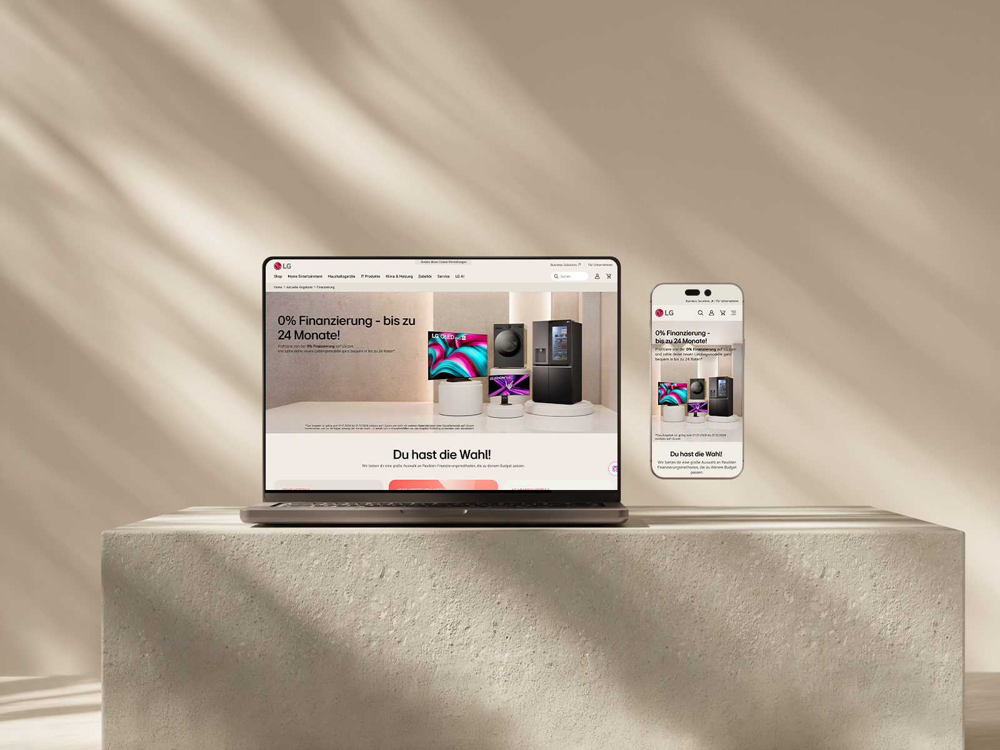
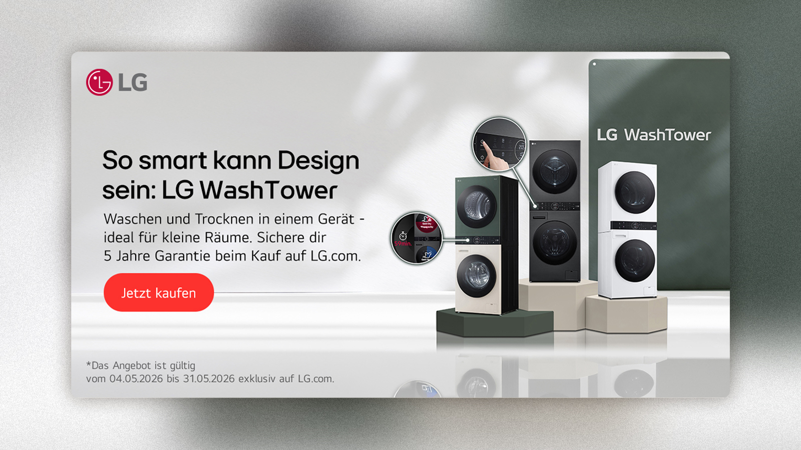
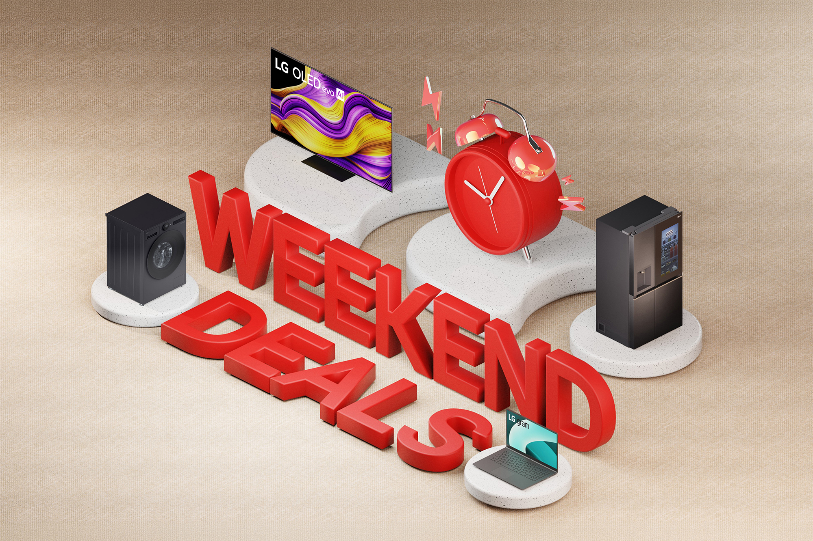
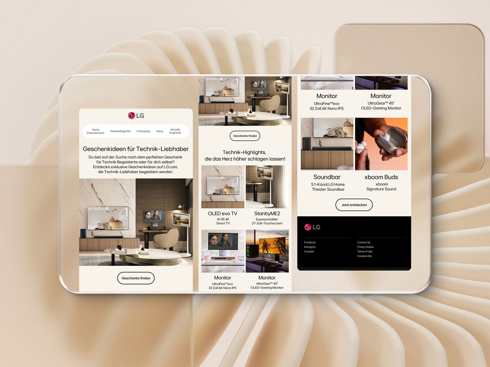
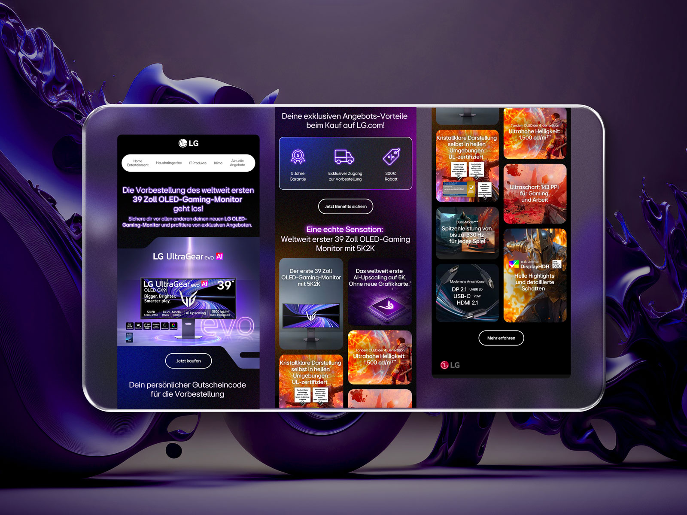
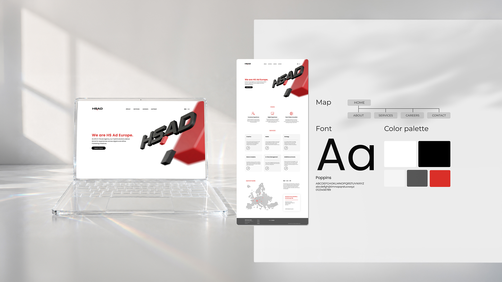

LG Electronics

Fragmented execution meant inconsistent brand presence across channels—newsletters, video, paid media, and digital assets lacked cohesion. The core issue wasn't the guidelines themselves, but the absence of practical, reusable templates.


We developed a modular newsletter template with channel-specific guidance for video, paid media, and social. We created 3D concept assets and motion design examples that teams could implement directly into their workflows.

The result: newsletter engagement increased. Design consistency spread across channels. Teams stopped reinventing the wheel. Production got faster. Revisions dropped.



Scale is only possible when the rules are worth trusting.
The insight that stuck: motion design was what made people care enough to adopt it. A design system only works when you hand people templates, not just documentation.
- Category
- Brand Design
- Year
- 2022–now
